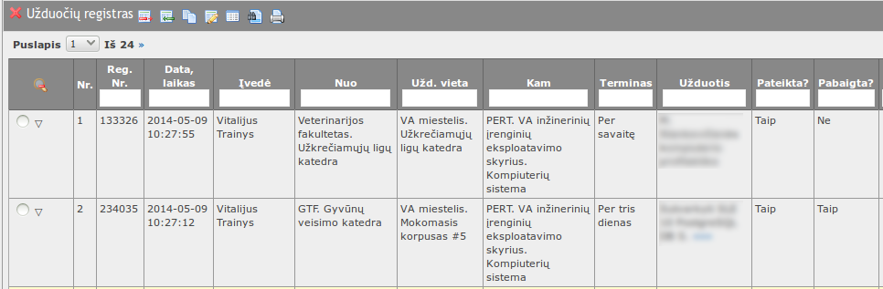
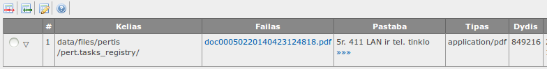

į pradžią Turinys
Užduočių registras/Gedimų žurnalas
Registras atverčiamas iš užduočių lentos (jei yra aprašyta) pasirinkus „Veikla – Užduočių registras/Gedimų žurnalas“, arba iš lentelių sąrašo, esančio sisteminiame meniu pasirinkus „Užduočių registras“.
- 
Lentelės rodinyje matyti:
- Reg. Nr. – registravimo numeris sistemoje.
- Data, laikas – įvedimo data, laikas.
- Įvedė – įrašą įvedusio naudotojo vardas, pavardė. Paprastai naudotojas mato tik savo paties įvestus įrašus.
- Nuo – padalinio, kuris registruoja gedimą, teikia užduotį, pavadinimas.
- Nuo – padalinio, kuris registruoja gedimą, teikia užduotį, pavadinimas.
- Užd. vieta – užduoties vieta, pvz. mokomasis pastatas #5.
- Kam – kuriam padaliniui skirtas gedimas/užduotis.
- Terminas – pageidaujamas užduoties įvykdymo/gedimo pašalinimo terminas.
- Pateikta – Taip/Ne. Užduotis/gedimas tampa aktuali (ją mato atsakingas PERT padalinio vadovas) tik tada, kai „Pateikta“ = Taip.
- Pabaigta – Taip/Ne. Jeigu PERT padalinys pabaigė įvykdė užduotį/pašalino gedimą, vadovas pažymi „Pabaigta“ = Taip.
- Pastaba – pastaba. Gali likti tuščia.
- Pakeista – įrašo pakeitimo data, laikas.
- Pakeitė – įrašą pakeitusio naudotojo vardas.
Galima atlikti šiuos veiksmus:
 Įterpti užduoties/žurnalo įrašą.
Įterpti užduoties/žurnalo įrašą.  Naikinti užduoties/žurnalo įrašą.
Naikinti užduoties/žurnalo įrašą. Redaguoti užduoties/žirnalo įrašą.
Redaguoti užduoties/žirnalo įrašą. Peržiūrėti užduoties/žurnalo įrašą.
Peržiūrėti užduoties/žurnalo įrašą. Filtruoti užduočių/žurnalo įrašus
Filtruoti užduočių/žurnalo įrašus- Rikiuoti užduočių/žurnalo įrašus
 Spausdinti ataskaitas, kurios susijusios su šiuo registru ir aprašytos ataskaitų konstruktoriuje
Spausdinti ataskaitas, kurios susijusios su šiuo registru ir aprašytos ataskaitų konstruktoriuje
Taip pat šiame registre(atvertus įrašo formą peržiūrai arba redagavimui) rodoma ir redaguojama susijusi informacija apie užduotį/gedimą:
- Užduotys – užduoties/gedimo vykdymo eiga, vykdytojo atsakymai.
- Failai – su užduoties/gedimo registravimu susiję failai.
Įterpti naują užduoties/gedimo registravimo įrašą
- Spausti lentelės antraštėje
- Atsiverčia naujo įrašo įterpimo forma
- Formoje užpildomi laukeliai:
- Reg. Nr. – registracijos Nr. Užpildomas automatiškai;
- Data, laikas – įvedimo data, laikas. Užpildomas automatiškai;
- Įvedė – užduotį/gedimą registruojančio naudotojo vardas, pavardė. Pasirinkti iš sąrašo;
- Nuo – padalinio, kuris registruoja gedimą/užduotį, pavadinimas. Pasirinkti iš sąrašo;
- Užd. vieta – kuriame pastate gedimas/užduotis. Pasirinkti iš sąrašo;
- Kam – kuriam padaliniui skirta užduotis. Pasirinkti iš sąrašo. Jeigu tiksliai nežinoma, pasirinkti „PERT“;
- Terminas – per kiek laiko pageidaujate, kad užduotis būtų įvykdyta;
- Užduotis – aprašyti užduotį/gedimą. Pvz. „pakeisti el. lemputę 111 kb.“;
- Pateikta – Jeigu pasirinkta „Taip“, užduotis registruojama ir padalinio vadovas mato užduotį, jeigu „Ne“ – užduotis/gedimas neregistruojamas. Jeigu pasirinkta „Taip“ ir įrašas išsaugotas, šiam įrašui pakeitimai neleidžiami;
- Pabaigta – „Taip“, jeigu užduotis baigta, „Ne“, jeigu dar vyksta. Užpildo atsakingas už užduoties vykdymą naudotojas;
- Pastaba – bet koks tekstas. Gali likti tuščia;
- Pakeista – įrašo pakeitimo data, laikas. Užpildomas automatiškai;
- Pakeitė – įrašą pakeitusio naudotojo vardas. Užpildomas automatiškai.
- Paspaudus duomenys išsaugomi, forma užverčiama.
- Paspaudus duomenys neišsaugomi, forma užverčiama.
Redaguoti užduočių registro įrašą
- Pažymėti norimą redaguoti įrašą.
- Spausti lentelės antraštėje.
- Atsiverčia įrašo redagavimo forma.
 Jeigu įterpiant ar redaguojant užduoties/gedimo įrašą laukelis Pateikta buvo pasirinktas „Taip“, įrašas neredaguojamas
Jeigu įterpiant ar redaguojant užduoties/gedimo įrašą laukelis Pateikta buvo pasirinktas „Taip“, įrašas neredaguojamas- Galima peržiūrėti užduoties vykdymo registrą „Užduotys“:

- Data, laikas – užduoties pateikimo data, laikas
- Kam – kuriam padaliniui skirta užduotis
- Atsakingas – atsakingo už užduoties vykdymą vardas, pavardė
- Terminas – užduoties įvykdymo terminas
- Būsena – užduoties būsena:
- Pateikta – užduotis pateikta padaliniui, bet nepriimta vykdymui
- Priimta – užduotis perskaityta, atsakingas už už užduoties vykdymą pažymėjo, kad užduotį gavo
- Atmesta – užduotis nevykdoma, atmesta
- Atsakymas – užduoties atmetimo priežastis, užduoties vykdymo eiga, užduoties vykdytojo komentarai
- Užduotis baigta? – „Ne“, jeigu nebaigta, „Taip“, jeigu baigta (atsakingas už užduoties vykdymą pažymėjo „Taip“)
- Pabaigta – užduoties pabaigimo data, laikas
- Galima peržiūrėti prie užduoties prisegtus failus lentelėje „Failai“:

- 
- Kelias – failo vieta
- Failas – saitas failui atversti, failo pavadinimas
- Pastaba – failo aprašymas
- Tipas – failo MIME tipas
- Dydis – failo dydis, baitai
- Pakeista – įrašo pakeitimo data, laikas (kada failas buvo įkeltas)
- Pakeitė – įrašą pakeitusio naudotojo vardas
-
Jeigu įterpiant užduoties/gedimo įrašą laukelis Pateikta buvo pasirinktas „Ne“, įrašą galima redaguoti, žr. įterpti.
- Paspaudus duomenys išsaugomi, forma užverčiama.
- Paspaudus duomenys neišsaugomi, forma užverčiama.
Naikinti užduočių registro/gedimų žurnalo įrašą
- Pažymėti norimą panaikinti įrašą.
- Spausti lentelės antraštėje.
- Atsiverčia įrašo naikinimo forma.
-
Jeigu įterpiant ar redaguojant užduoties/gedimo įrašą laukelis Pateikta buvo pasirinktas „Taip“,
įrašo panaikinti negalima
- Paspaudus įrašas panaikinamas, forma užverčiama.
- Paspaudus įrašas nepanaikinamas, forma užverčiama.
Peržiūrėti užduočių registro/gedimų registracijos žurnalo įrašą
- Pažymėti norimą peržiūrėti įrašą.
- Spausti lentelės antraštėje.
- Atsiverčia įrašo peržiūros forma. Forma tokia pati, kaip ir redagavimo
- Galima peržiūrėti užduoties vykdymo eigą ir prisegtus failus
- Paspaudus , forma užverčiama.